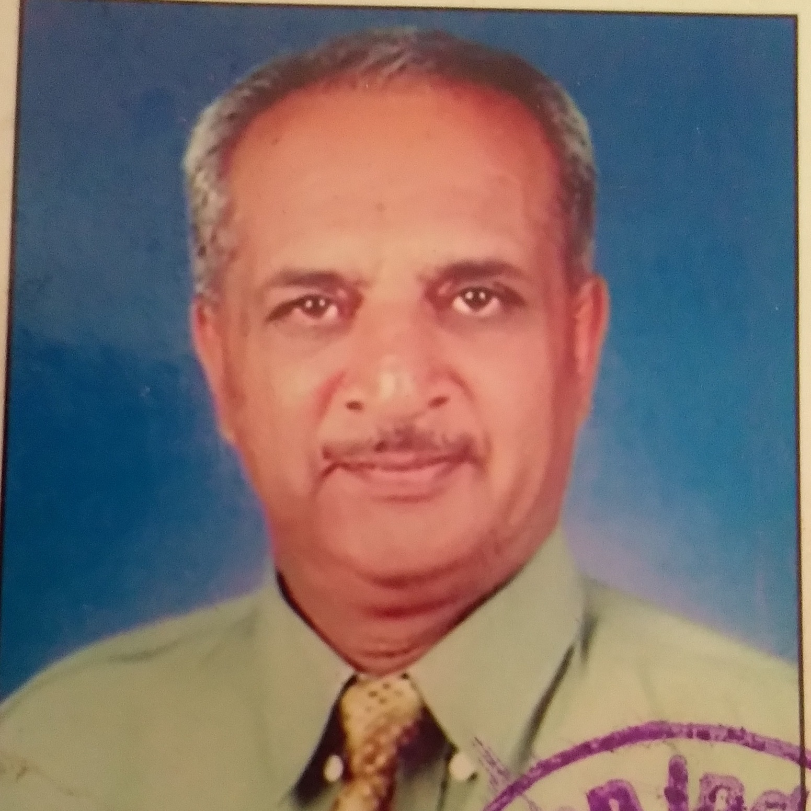

श्री. चंद्रशेखर कुलकर्णी
माननीय मुख्याध्यापक
B.Sc., B.Ed
गणित शिकवण्याचा ४६ वर्षांपेक्षा अधिक अनुभव.
 श्री. बशीरून मुल्ला
श्री. बशीरून मुल्ला
उच्च-माध्यमिक विभागप्रमुख
M.A., B.Ed
कौतुकमध्ये १४ बर्षांपेक्षा अधिक अनुभव
 सौ. योगिता वाणी
सौ. योगिता वाणी
माननीय मुख्याध्यापिका
B.A.(english), B.Ed
समाजशास्त्र व इंग्रजी शिकवण्याचा १२ वर्षांपेक्षा अधिक अनुभव
सौ. तेजस्विनी जाधव
प्राथमिक विभागप्रमुख
B.A., B.Ed
कौतुकमध्ये ६ वर्षांपेक्षा अधिक अनुभव
ध्येय
समाजाच्या उन्नतीसाठी
आत्मनिर्भर, अष्टपैलू,
नाविन्यपूर्ण, सर्जनशील, गुणवत्तापूर्ण जागरूक विद्यार्थी घडवणे.
उद्दिष्टे
१. शिरोली, हेर्ले आणि इतर ग्रामीण भागात किमान फीमध्ये दर्जेदार शिक्षण देणे.
२. "कधीही हार मानू नये." वृत्ती विद्यार्थ्यांमध्ये विकसित करणे.
३. विद्यार्थ्यांना त्यांच्या भविष्यासाठी तयार करणे.
४. विद्यार्थ्यांना उत्तम करिअरसाठी मार्गदर्शन करणे.
५. विद्यार्थ्यांना आंतरराष्ट्रीय स्तरासाठी तयार करणे.
६. विद्यार्थ्यांना स्वातंत्र्य, समानता, बंधुत्व आणि प्रामाणिकपणाचे मूल्य शिकवणे.
आमची वैशिष्टे
१. बालवाडी ते 10वी वर्गापर्यंत सेमी-इंग्रजी.
२. सेमी-इंग्रजीसह संस्कृत शिकवणारी एकमेव शाळा.
३. इयत्ता पहिलीपासून स्पर्धा परीक्षांची तयारी.
४. हस्तकला, क्रीडा, चित्रकला यासारख्या क्रियाकलापांसह बालवाडीत गणित आणि इतर विषयांचा मजबूत आधार तयार करणे.
५. बालवाडी अभ्यासक्रम व्यावहारिक जीवनाशी संबंधित.
६. पालकांच्या थेट सहभागाद्वारे विद्यार्थ्यांचे अंतर्गत मूल्यमापन. इतर नामांकित शाळांनीही त्याची दखल घेतली.
७. पारदर्शक व्यवहार, सुशिक्षित संचालक आणि विविध क्षेत्रातील यशस्वी स्थायी सदस्य.
८. नेहमी उपक्रमशील - अवांतर वाचन, गायन, संगीत, वक्तृत्व, हस्तकला, चित्रकला, बुद्धिबळ, अॅबॅकस, बाजारज्ञान आणि गृहभेटी.
९. प्रोत्साहन देणारे, उपक्रमशील आणि सर्जनशील शिक्षक.
१०. गुणवत्तापूर्ण माजी विद्यार्थी स्वबळावर आजचे यशस्वी नागरिक.
Fee Structure
१. खेळ गट - ४०००/-
२. बालवाडी - ५०००/-
३. पहिली ते चौथी - ६०००/-
४. पाचवी ते दहावी - ७०००/-